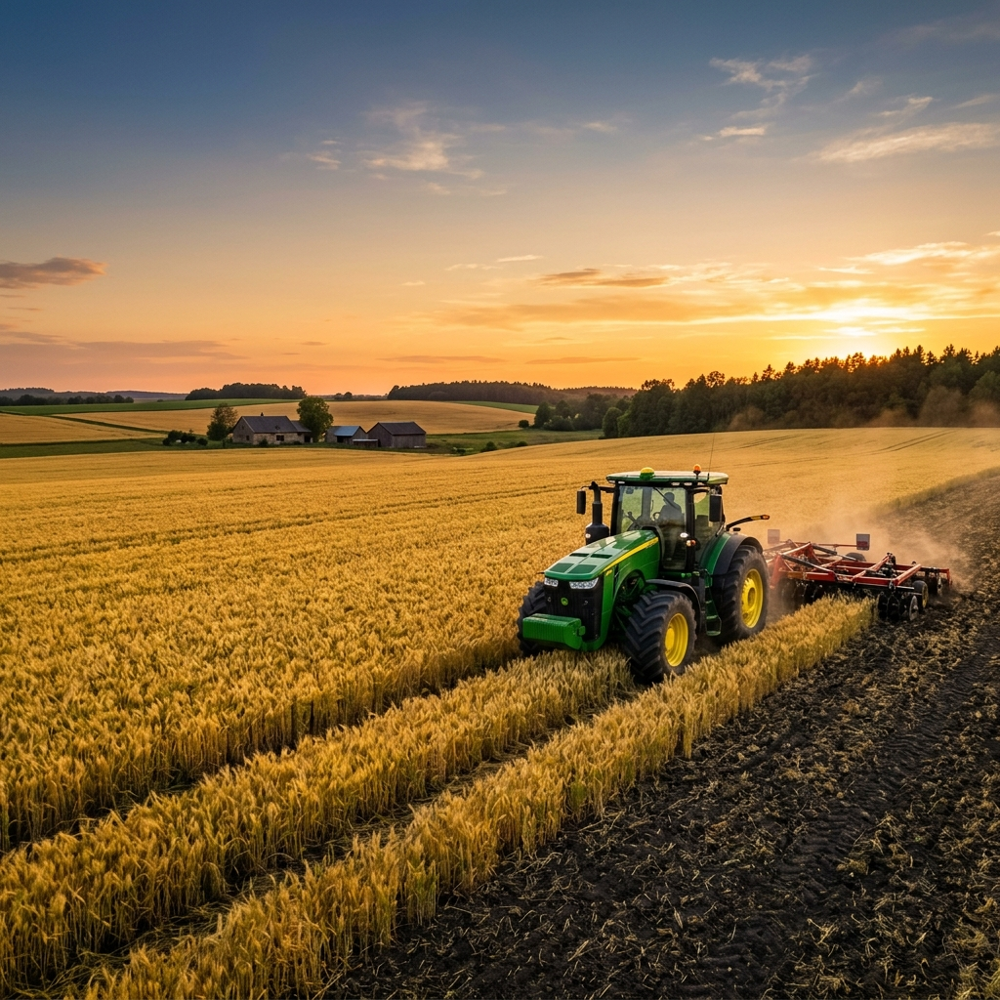

A Força do Seu Campo Não Pode Parar.
Portfólio Completo de Peças Agrícolas
Trabalhamos com marcas renomadas mundiais e reposição de alta durabilidade para que sua máquina opere com máxima eficiência no campo.
Tratores & Colheitadeiras
Peças de motor, transmissão, embreagem, e filtros para marcas líderes como John Deere, Massey Ferguson, Case, New Holland e Valtra.
- Motores e Filtros
- Eixos e Transmissões
- Cabines e Reposição
Plantio & Dosadores FertiSystem
Sistemas de dosagem de adubo e semente de altíssima precisão. Peças de reposição originais FertiSystem para garantir o plantio perfeito.
- Dosadores FertiSystem
- Distribuição Uniforme
- Aumento de Produtividade
Rolamentos & Correias
Rolamentos Timken, INA, Peer, GBR e correias Gates e Optibelt de alta durabilidade, resistentes a atritos e cargas pesadas no trabalho severo do campo.
- Rolamentos de Esfera e Rolo
- Correias Agrícolas Gates
- Vedações de Alta Performance
Pulverização & Implementos
Bicos de pulverização de cerâmica, mangueiras, conexões e componentes hidráulicos resistentes a corrosivos químicos. Discos e reparos para grades agrícolas.
- Bicos de Cerâmica e Vazão
- Mangueiras de Alta Pressão
- Peças de Grade e Arados
Precisa de uma peça específica que não está listada acima? Nós encontramos para você!
Falar com um AtendenteCompromisso Real com a Sua Produtividade
Entendemos que no agronegócio o tempo é precioso. Uma máquina parada na época do plantio ou colheita gera prejuízos. Por isso, nossa operação é estruturada em torno de agilidade e confiabilidade.
Envio no Mesmo Dia
Pedidos aprovados até as 14h são despachados no mesmo dia via transportadoras parceiras rápidas ou correio para todo o Brasil.
Parceria Oficial FertiSystem
Oferecemos o suporte oficial e peças de reposição originais da FertiSystem, garantindo que o seu distribuidor de adubos funcione de forma perfeita.
Estoque Multimarcas
Amplo catálogo com mais de 10 mil itens em Cruz Alta - RS, prontos para atender as necessidades das principais marcas de maquinário agrícola.

Solicite Seu Orçamento de Peças Agora
Preencha os campos abaixo e nosso consultor especializado retornará em minutos com as melhores condições e prazo de entrega para sua região.
A Palavra de Quem Está no Campo
Veja o depoimento de produtores rurais, mecânicos e gestores de frotas que confiam na parceria com a CenterAgro.
Fale Conosco
Nossa equipe está pronta para lhe atender. Escolha o canal de sua preferência ou faça uma visita à nossa sede física em Cruz Alta.
Telefone Fixo
(55) 3322-5231WhatsApp Oficial
(55) 98452-7182E-mail Corporativo
lojavirtual@centeragro.com.brEndereço Sede
Av. Saturnino de Brito, 1420, Sala 01Bairro Conceição, Cruz Alta - RS, CEP 98040-336
Horário de Atendimento
- Segunda a Quinta: 07:45 às 12:00 — 13:30 às 18:00
- Sexta-feira: 07:45 às 12:00 — 13:30 às 18:15
- Sábado: 08:00 às 12:00
- Domingo: Fechado